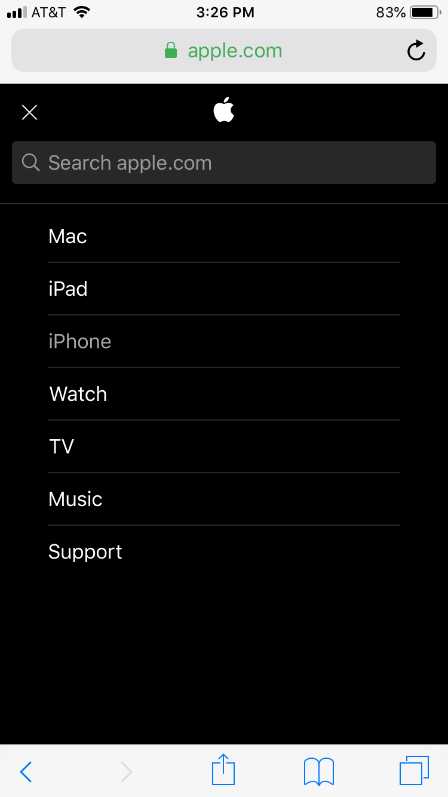
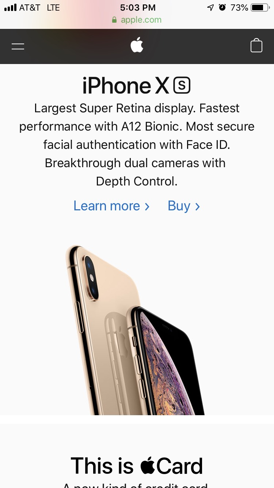
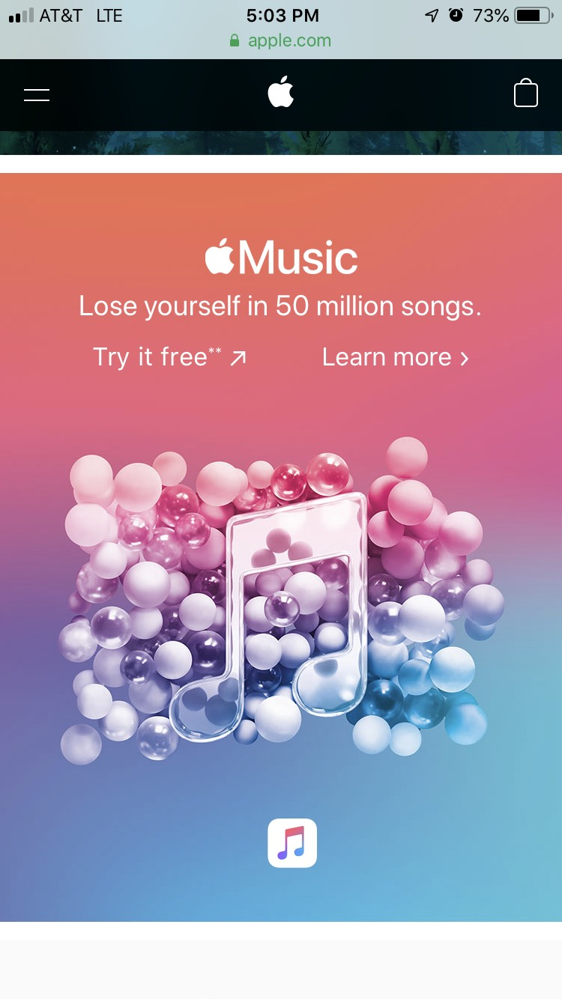
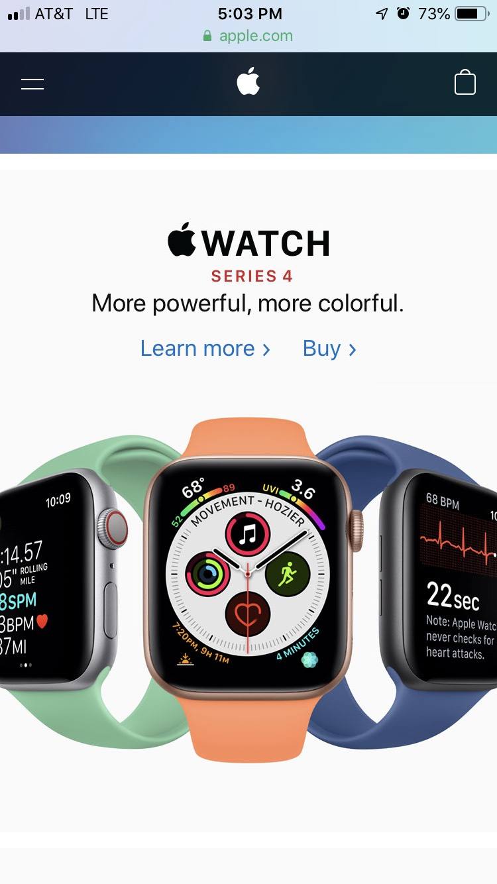
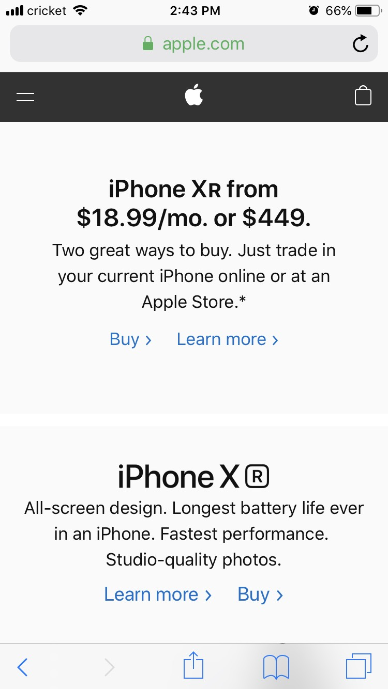

Design - Analysis Assessment
apple.com
Design Principles
Proximity — Aaron Jones
Alignment — Vladlen Mykhailovskyi
After an exploration of a website that our team chose apple.com, I noticed the evident example of design principle such as alignment, which is shown on the attached screenshot from my mobile device. As we can observe from the picture all elements in the navigation bar are left-aligned and displayed in a block. This makes the navigation bar easy to follow and visually appealing.
Repetition — Lance Bunch
  I think this website is a prime example of repetition. The first thing I notice is the center aligned text briefly describing the product, followed by some form of “learn more” link and often times a “buy” option. There is great use of phantom shapes where they don’t directly have rectangles in each new product listing, but that is the shape it is in. They also do a god job at not completely boring the viewer with the same exact thing each time. They switch up the colors, the type of product, and the type of information. All in all this is a great example of repetition and it really gets the user scrolling!
Contrast — Grace Lamb
Apple has a very distinct brand that almost everyone can recognize. They utilize the largest known contrast of black and white to their advantage. Their main logo is the apple which is displayed in vivid white on a black background. In this screenshot it is clear how Apple uses a crisp contrast to prompt the users to do what they want and remember who they are as a company.
Typography — Grace Lamb
Similarly, the typography is distinct to Apple's brand. It is the same font they use on all of their adds and even when utilizing their products. Apple has joined contrast and typography together to showcase their new technological advancements to the users.
Site Purpose Statement
Target Audience
- Age:
- Occupation:
- Income:
- Other:
Persona
- Name:

- Occupation:
- Primary Device:
- Quote: